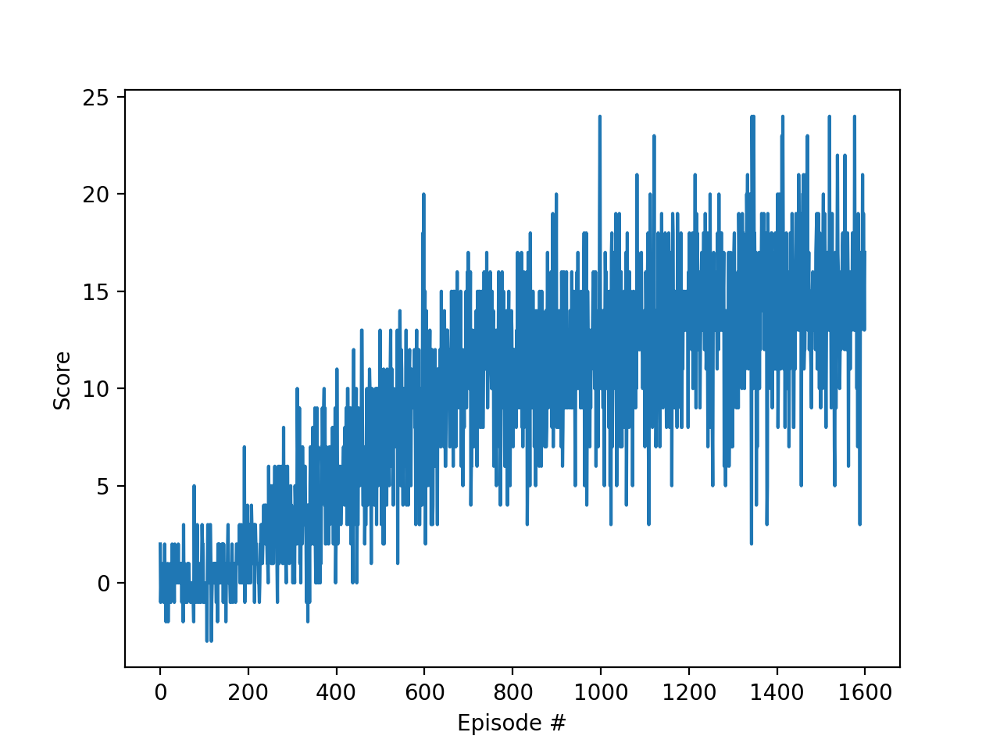

One value per move, learned with a network, a replay buffer and a target network.
In reinforcement learning an agent tries moves, receives a score, and learns which moves lead to a higher score.
The running example is an agent that collects bananas in a Unity ML-Agents arena (ML-Agents is a toolkit for building game-like training environments in the Unity game engine); the code is in the Value-based-methods repo. The agent picks one of four moves (forward, backward, turn left, turn right) and gets +1 for a yellow banana and −1 for a blue one.
A Deep Q-Network (DQN) learns one number per move, the Q-value: how much future score that move is worth in the current situation. A neural network maps what the agent senses to those numbers, the agent takes the move with the biggest one, and training pushes each number toward the reward that followed plus the value of the next situation.
DQN acts every step but learns only every fourth step (Figure 1).
On this page
The world is a square room of yellow and blue bananas. The episode score is yellows minus blues when a fixed clock runs out.
The agent senses the room as 37 numbers: its velocity plus ray sensors, each reporting the distance to the nearest yellow banana, blue banana or wall.
The arena counts as solved when the average score over 100 consecutive episodes reaches 13 (the Udacity project's solve rule). The repo's training script would stop early at a stricter average of 17.0; the run in Figure 9 plays all 1,600 episodes.
One episode in code. brain_name is the key of the arena's one agent in the output of env; agent holds the network and the replay buffer (Section 6) and learns every fourth agent.step call; eps is the chance of a random move (Section 3).
DECAY, EPS_MIN = 0.998, 0.01
out = env.reset(train_mode=True)
info = out[brain_name]
s = info.vector_observations[0]
score = 0
while True:
a = agent.act(s, eps)
out = env.step(a)
info = out[brain_name]
r = info.rewards[0]
obs = info.vector_observations
s_next = obs[0]
d = info.local_done[0]
agent.step(s, a, r, s_next, d)
score += r
s = s_next
if d:
break
eps = max(eps * DECAY, EPS_MIN)EPS_MIN.The RL Basics page introduced Q-values: one number for every situation and move, the expected score of that move there. Q-learning keeps them in a table and corrects one entry after every move.
A policy is the rule that turns a situation into a move; DQN's policy is to take the move with the biggest Q-value.
Tabular Q-learning in a few lines. N_MOVES is 4 and s_next is the state after the move.
import random
if random.random() < epsilon:
a = random.randrange(N_MOVES)
else:
row = Q[s]
a = row.index(max(row))
best = max(Q[s_next])
target = r + gamma * best
td = target - Q[s][a]
Q[s][a] += alpha * tdAn agent that always takes its best-known move never tries anything new. So with probability epsilon, ε, it takes a random move instead.
Epsilon starts at 1.0, all random, and falls toward a floor of 0.01.
Random moves still teach the agent, because Q-learning is off-policy: the target uses the best next move (the max in the update), whatever move the agent actually takes.
On a small grid the Q-table is small enough to draw, so you can watch Q-learning fill it in.
Figure 3. The same epsilon-greedy choice and +1 and −1 bananas on a 6 by 6 grid, with a Q-table in place of the network. Squares near the yellow bananas turn orange first.
State: the square plus which yellows are uneaten. Toy α 0.3, γ 0.9, ε decay 0.99; the real run uses Adam at 5e-4, γ 0.99, decay 0.998.
Figure 4. Two identical agents on identical grids with the same learning rule; the fixed agent keeps ε at 1.0 and the decaying agent lets it fall to 0.01. Only the decaying agent turns what it learns into a high score.
Toy α 0.3, γ 0.9; ε decays by 0.97 per episode instead of 0.998 so the race finishes fast.
Tabular Q-learning (Watkins, 1989) needs one row per situation; 37 continuous numbers make too many for a table.
DQN (Mnih et al., 2015) replaces the Q-table with a neural network: 37 numbers in, four Q-values out. The update rule and the take-the-max choice stay the same.
The network estimates values for unseen situations by similarity to seen ones. That sharing makes training unstable in two ways, and DQN adds one fix for each.
The DQN paper learned control from raw screen pixels with a convolutional network (layers that scan the input for small local patterns), trained with Q-learning and stabilized by both fixes (Figure 5). The banana agent feeds 37 numbers instead of pixels.
The first fix is experience replay. Consecutive steps are almost identical, so training on them in order fits one corner of the arena and forgets the rest.
A replay buffer stores past steps, and training draws random batches from it (Figure 6).
import random
from collections import deque
BUFFER_SIZE = 100_000
BATCH = 64
buf = deque(maxlen=BUFFER_SIZE)
buf.append((s, a, r, s_next, d))
batch = random.sample(buf, BATCH)The second fix is the target network. If the network being trained also computes its own target, every gradient step (one small weight change that lowers the loss) moves the guess and the target together, and the Q-values can keep growing instead of settling.
A second copy of the network computes the targets and moves toward the live network by a small share after each update, the soft update the repo uses. The 2015 DQN paper instead copied the live network into it every 10,000 updates (its hyperparameter table), frozen in between.
One training step, run once for each batch from the replay buffer:
The same three lines in PyTorch, with opt an Adam optimizer over q_live; s, a, r and s_next are a batch of 64 steps, a and r as (64, 1) columns.
import torch
import torch.nn.functional as F
GAMMA, TAU = 0.99, 1e-3
def soft_update(tgt, src):
old = list(tgt.parameters())
new = list(src.parameters())
with torch.no_grad():
for t, p in zip(old, new):
t.lerp_(p, TAU)
with torch.no_grad():
q_next = q_target(s_next)
best = q_next.max(1, True)
y = r + GAMMA * best.values
q_sa = q_live(s).gather(1, a)
loss = F.mse_loss(q_sa, y)
opt.zero_grad()
loss.backward()
opt.step()
soft_update(q_target, q_live)soft_update: moves each target weight a fraction τ toward the live weight.max(1, True) keeps it a (64, 1) column (eq card in Section 6.3, line 1).Step 1: Act
Figure 8. The blue target network is not training, so the orange live network chases a goal that holds still.
A late-training step: ε 0.04, batch 64, as in the repo.
Epsilon (Section 3) sets the pace.

Figure 9. Score of every episode in the repo's DQN banana run. ① Episodes 0 to 200, ε 1.0 to 0.67: mostly random moves, scores near 0. ② Episodes 200 to 800, ε 0.67 to 0.20: a noisy climb. ③ From episode 800, ε 0.20 to 0.04: scores centre near 11 to 15, around the dashed solve bar of 13, which applies to the average over 100 episodes.
The run makes about 120,000 learning steps, one per 4 of its 480,000 environment steps (1,600 episodes of 300 steps).
The network in the repo is a Dueling Double DQN. The dueling part splits the network into two streams, one estimating how good the situation is and one estimating how much better each move is than average, then adds them (Wang et al., 2016).
The double part reduces overestimation, Q-values that come out too high. Double DQN (van Hasselt et al., 2016) picks the next move with the live network and scores it with the target network.
The repo learns every 4 environment steps once the buffer holds more than 64 steps (Figure 10); Stable-Baselines3 has a widely used PyTorch DQN.
Acting costs one forward pass. A learning step costs forward passes of both networks on 64 next states, a forward and backward pass on 64 states, and one blend of the target weights. The 100,000-step buffer is about 30 MB as 32-bit floats.
| Setting | Raising it | Lowering it |
|---|---|---|
| Replay buffer | older, more varied batches; adapts more slowly | forgets faster; batches more alike |
| Batch | steadier updates, more compute | cheaper, noisier updates |
| Learn every | fewer updates: cheaper, slower | reuses each step more; faster, can chase noise |
| Learning rate | faster, but Q-values can oscillate or diverge | steadier, slower |
| Discount γ | far-off bananas count more; near 1 they count like the next one | γ = 0 chases only the next reward |
| Target update τ | target follows faster, less stable; τ = 1 copies every step | steadier, slower; τ = 0 freezes the target |
| ε floor | more random moves late: keeps correcting, costs score | 0 stops exploring at the floor |
| ε decay | closer to 1: explores longer | smaller: settles on the first route that scores |
util/agent.py and env.py, and what raising or lowering each one does.learn_step is the repo's learning step with the Double DQN target, using q_live, q_target, opt and soft_update from above.
import torch
import torch.nn.functional as F
GAMMA, TAU = 0.99, 1e-3
@torch.no_grad()
def td_target(r, s_next, done):
live_q = q_live(s_next)
a2 = live_q.argmax(1, True)
tgt_q = q_target(s_next)
q_t = tgt_q.gather(1, a2)
keep = 1 - done
return r + GAMMA * q_t * keep
def learn_step(batch):
s, a, r, s_next, done = batch
y = td_target(r, s_next, done)
q_sa = q_live(s).gather(1, a)
loss = F.mse_loss(q_sa, y)
opt.zero_grad()
loss.backward()
opt.step()
soft_update(q_target, q_live)keep is 0 at the end of an episode.Three mistakes break this loop.
done; without it the last step of an episode takes value from the next episode. Store done as a float; PyTorch cannot subtract a bool tensor from 1.done as (64, 1) columns; a (64,) reward broadcast against (64, 1) values silently becomes (64, 64).Figure 11. The trained DQN agent in the Unity ML-Agents arena (the clip from the RL Basics page): it holds a direction and curves around blue bananas without slowing down.
DQN takes the max over a short list: four moves, four Q-values. With a continuous action, such as a push anywhere from 0.0 to 1.0, there are infinitely many actions and no list to take the max over.
So how do you pick the best action when there are infinitely many? The Deep Deterministic Policy Gradient (DDPG) page answers it: DDPG keeps the Q-value and adds a second network, the actor, that outputs the action directly.